Recovered article. HTML body is from Common Crawl (text only); images came from the Sep 2022 iOS PDF:
Wiring & Grounding.pdf ·
24 extracted images & links ·
24 of 24 images merged inline (aspect-ratio matched). Original src preserved on each
<img> as
data-original-src.
Contents: Never Use Existing Vehicle Wiring!; Where To Connect Power; Ground Loop; Adequate Power; Expelling A Few Myths; Factory Power Cables; What Size Wire to Use; Insulation & Stranding; Wire Lugs & Terminations; Terminating Blocks; All About Fuses; Circuit Breakers; A Few Words On Relays; Fuse Holders; Wiring Through the Firewall; Hiding the Wiring; Under Chassis Wiring; Power Protectors;
Never Use Existing Vehicle Wiring
Never, ever use existing vehicle wiring to power any amateur radio gear. This includes fuse taps, and so-called accessory sockets, aka cigarette lighter sockets! In part from the National Fire Protection Association, sub-section 15-3.2.1:
Overloaded Wiring. Unintended high-resistance faults in wiring can raise the conductor temperature to the ignition point of the insulation, particularly in bundled cables such as the wiring harnesses or the accessory wiring under the dash where the heat generated is not readily dissipated. This can occur without activating the circuit protection.
There's rarely a single cause for any given car fire, even if an investigator can trace all the way back to the incident that sparked the blaze. It's more likely that there was a combination of causes: human causes, mechanical causes, and chemical causes, and they all worked together to create an incredibly dangerous situation.
The process is called thermolysis (aka pyrolysis). It is the decomposition of the insulation covering the wire, brought about by high temperatures—resistive heating in other words. Thermolysis may occur within a few minutes, or over an extended length of time. Ignore this rule, and your vehicle may end up looking like a burnt cinder!
There is yet another issue surrounding the use of accessory sockets, factory-supplied 120 volt inverters, and that is RFI generated by the electronics built into these devices. Arcing can also occur between the spring-loaded tip of the accessory socket plug, and the positive contact inside the socket. The issue is pervasive enough, that some vehicle manufacturers have disclaimers about the issue written into their Owner's Manuals. It should also be noted these conditions can cause codes to be written into the OBDII's memory. Whether these codes cause the MIL to illuminate is moot. More information on the MIL, and the codes which cause it to illuminate, are in the electronics article.
☜Return☜
Where To Connect Power
Ford's F-series, and other aluminum-bodied vehicles require special installation practices with respect to galvanic corrosion. Here is the bulletin from Ford which explains what must be done to prevent galvanic corrosion. The results of failing to follow Ford's guide lines are predictable, and not covered under warranty! If in doubt, contact your local Ford dealer for details. Pay particular attention to the grounding rules outlined in the bulletin! Further, bonding is not required, as Ford has already bonded the bed and cab.
The same basic rules apply when installing amateur radio gear in other aluminum-bodied vehicles. However, their factory recommended installation procedures may be different than Ford's. It is always best to contact your local dealer and/or the manufactures customer support staff before installing any amateur radio gear in said vehicles.
And as mentioned several times in this article, the body and/or the chassis of any vehicle, aluminum or otherwise, should never be used as a ground return for amateur radio gear. Again, think galvanic corrosion!
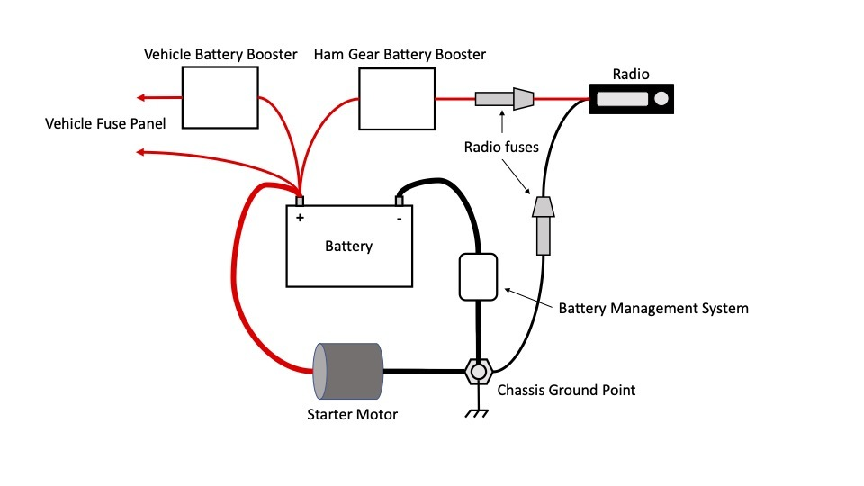
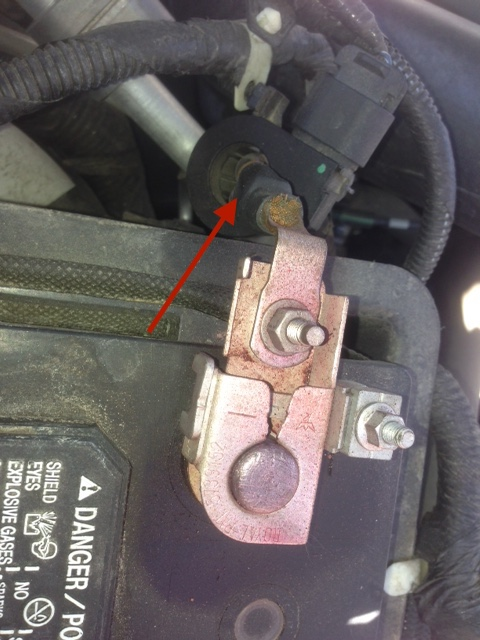
Battery monitoring systems (BMS) are now a universal subsystem in every modern vehicle, due in part to the fed-mandated Engine Idle Shutdown (EIS). The load current is measured with an Electrical Load Detector (ELD), typically a Hall device mounted as part of the negative battery connector, or around the ground lead itself as shown in the photos below. The measured data is fed to the engine CPU (known by a variety of names). This allows a more precise fuel-air adjustments for changing accessory loads (AC for example), the condition of the battery can also be monitored. It is imperative that the ELD not be bypassed when wiring amateur radio equipment, so typical wiring recommendations found in Owner's Manuals should not be followed!
The pictorial at right is courtesy of the ARRL. It clearly represents the correct wiring scenario, whereas the negative lead goes to the same chassis grounding point as the battery's chassis ground point. And as shown, the negative lead fuse should not be removed. The reason is, if the grounding point should lose its integrity, excessive current could flow through the transceiver's negative lead. It also prevents a minor ground loop between the leads. It should be noted, that in some cases, the battery's chassis grounding point is inaccessible. If this is the case, attach the transceiver's ground connection as close to the battery's grounding point as possible.
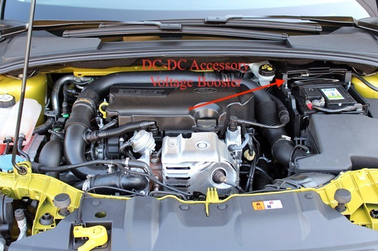
There are a few other related issues to be discussed. The first is the so-called VQM (voltage quality module, indicated by the red arrow in the photo at left). It is nothing more than a DC to DC inverter used to maintain accessory power while the engine is shut down (EIS requirement). Power for the inverter may come from a more robust SLI battery, a dual-layer super capacitor, or a second trunk-mounted battery. In any case, these subsystems should be not used to power amateur radio gear! In other words, only the main SLI (Starting, Lights, Ignition) battery should be used! If a booster is required to power amateur radio gear, it should be installed as shown in the diagram above right.
Proper wiring maintenance is an important undertaking, but one which is often overlooked. One all to common consequence is a failure of a battery lead and/or its connection to the chassis or distribution block. The result is a load-dump transient (LDT). If one occurs, it is not uncommon for the resulting voltage spike to exceed several hundred volts! Fortunately, there is some built-in protection at least on late-model vehicles.
The diodes used in most late-model vehicle alternators are more than just simple diodes. They are designed to break down, and act like a reverse-biased zener diode should the output voltage exceed ≈18 volts. This provides first level protection for the on-board electronics should a battery connection be lost (LDT). Some makes use a specific device to limit LDT spikes. These devices may help protect amateur radio gear interconnected to the vehicle's electrical system, but it doesn't alleviate the need to do periodic wiring maintenance especially fuse holders.
As noted below, there are published standards for the voltage drop across a fuse and its holder. The drop assumes the connections are all secure. But time, dirt, and oxidation can cause these connections to increase in resistance, which increases the voltage drop. So part of the routine maintenance should include removing and reinserting fuses, power pole splices, and even transceiver-mounted power connectors.
It is not uncommon for power to a vehicle's electrical system to be interrupted when installing radio equipment. Whether inadvertent or not, this interruption can have consequences. For example, anti-theft protection built into Navi and entertainment systems are often activated. This requires reentering an activation code. In some rare cases, the ignition system can also be effected. While these codes may be readily available (in the Owner's Manual), but in some cases your dealer is the only source. In addition, vehicles equipped with programmable BMS (battery monitoring system) like BMW vehicles, may have to be reprogrammed by your dealer. And, vehicles equipped with fuzzy-logic control systems, will have to reprogram themselves over time. The bottom line here is, if in doubt, read your Service Manual, or contact your dealer's service department before undertaking your installation.
Starting with the 2021 model year, Ford Motor Company offers three AC power options for the F150 Pickup trucks, with wattage capabilities up to 7.2 kW. These hybrid vehicles, are perhaps the harbinger for competing models. While they (Ford's) offer rather clean AC power, they're not intended to be used while underway. The viability of using them as stationary power for amateur radio operations, remains to be seen. In any case, we need to remember these vehicles are hybrid based, and experience has shown, that hybrid vehicles and amateur radio are all but mutually exclusive.
☜Return☜
Ground Loop
A ground loop is defined as a voltage differential between any two points, in either a power or ground connection. The most common manifestation is alternator whine superimposed (primarily) on the transmitted signal. The most prevalent cause is using a mag mounted antenna. Excessive grounding (bonding) is another, particularly when a ground strap is used as a substitute for proper antenna mounting!
Using the chassis for a ground return is yet another cause. However in this case, ground loops often appear to be an RFI issue, particularly when they cause data corruption in one of the various on-board digital devices. This fact points out another important point.
It is very difficult to separate the cause of a specific interference issue, when common mode current, ground loops, and real RFI mimic each other. To assume a specific cause can be a real diagnostic time waster! Quite obviously then, correct wiring, bonding, and common mode choking at the onset of an installation, is a worthwhile endeavor!
☜Return☜
Adequate Power
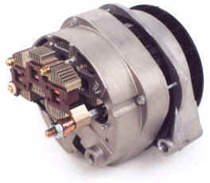
If your vehicle has either a heated back glass, or heated seats, chances are there is enough reserve to power even a 200 watt Kenwood TS480Hx. But, only when these systems are not in use. If you're going to run high power (≈500 watts PEP output, ≈70 amp average draw), it is best to check with your dealer's service department who can tell you what size the alternator is. For high power, an alternator rating of at least 130 amps is required, and perhaps larger if the vehicle has high-level of accessories.
More information on alternators, and other power requirements, read the highlighted article.
☜Return☜
Expelling A Few Myths
One very popular RFI myth asserts that power wiring and coax cable runs should not be parallel to and/or bundled together with the coax feed line. The truth is, coax doesn't leak RF! What can (and does) happen is common mode current. In this case, RF flows on the outside of the coax shield which can be both radiated and induced into surrounding cabling, whatever it is. It is this fact which no doubt led to the myth in the first place.
There will always be some level of common mode current flow in any mobile installation. The reason is, there is always ground loss even a VHF frequencies. The more ground loss, the higher the level of common mode there will be. Poor antenna mounting techniques (mag and clip mounts) and locations (trailer hitch and bumper mounting) increase the level rather drastically. As the Common Mode article explains, proper choking of these currents must be applied. And if you don't? Your receive SNR will be affected, even though you might not realize that it is.
 Twisting the positive and negative power leads together to enhance noise immunity and/or cure alternator whine and/or cure ignition RFI are popular myths. So popular in fact, that at least one automobile manufacturer mentions this myth in their two way radio installation guide! The truth is, power cables are not balanced in the same sense CAT5 cable is. Thus twisting the power lead wires has virtually no effect on noise immunity at common amateur frequencies.
Twisting the positive and negative power leads together to enhance noise immunity and/or cure alternator whine and/or cure ignition RFI are popular myths. So popular in fact, that at least one automobile manufacturer mentions this myth in their two way radio installation guide! The truth is, power cables are not balanced in the same sense CAT5 cable is. Thus twisting the power lead wires has virtually no effect on noise immunity at common amateur frequencies.
Another popular myth is using a brute force filter to cure alternator whine, common mode current, or RF imposed on the power wiring (an exceedingly rare occurrence). For alternator whine, they're a patch at best, and if you wire your installation correctly, you won't need one. However, there is one thing brute force filters will do, and that's increase voltage drop. For no other reason, they should be shunned.
Contrary to advertising hype, ferrite beads installed on power cables are as worthless as brute force filters. The rule of thumb for both devices is, if they cure a problem, then something else in the installation is (was) amiss!
Lastly, as mentioned in the Alternator article, Farad-sized capacitors have several serious drawbacks which effectively negates their use. And, they are not a cure for alternator whine, or an inadequately-wired installation.
☜Return☜
Factory Power Cables
Most solid state transceivers are factory supplied with a 10 foot (3 meter) long power cable. The 2.5 mm diameter wire, it is slightly smaller than #10 AWG (1.076Ω vs. .9987Ω per 1,000 feet). On average, the voltage drop through a stock power cable is ≈.6 volts (22 amps), which is slightly over the recommendation of .5 volts or less. This presents an enigma when extended factory cables. One example listed below suggests using a RigRunner. However, any loss in the cable supplying the RigRunner is additive.
The best solution is to replace the factory cable with a home brewed one, using larger a wire size. An alternative is to shorten the factory cable (between the RigRunner and the transceiver), and make sure the RigRunner wiring is adequately sized, so the total voltage drop is .5 or less.
☜Return☜
What Size Wire To Use
The primary basis for selecting the correct wire size is not its current handling capability. Rather, it is based on the voltage, drop under the impressed load, over the length in question. It is expressed mathematically as I2R loss. Therefore, it should always be based on the peak current draw, not the average. And, it is always best to error on the safe side when it comes to voltage drop. Selecting the next larger size wire doesn't double the cost of the wire or that of the connectors. If you're planning on running an amplifier in the future, it's always best to plan ahead and install the capacity you're going to need when the time comes.
Modern amateur mobile transceivers universally operate on a nominal 13.8 vdc. In a mobile scenario, the DC voltage actually varies from below battery resting voltage (≈12.2), to as high as 14.4 when the alternator is charging the battery. If we allow the voltage to drop much lower than 12.2, most transceivers will simply shut off. And, at low voltages the power output drops, and the IMD increases. Thus it behooves us to minimize the voltage drop in our wiring. With that in mind, we need to know the peak current draw. In both cases the manufacturer's published figures are close enough. For an average 100 watt (200 watts input) transceiver, the peak current is approximately 22 amps which includes some parasitic draw like the cooling fan. A 50 watt FM transceiver is about half that or 11 amps.
Here is the formula for calculating the voltage drop for any given size and length of wire including the slight drop due to the fuses and their holders. For the record, voltage drop is frequently referred to in amateur literature as I2R (current squared times resistance) losses, but I2R actually refers to power loss.
[(Rw • 2l • .001) + 2k] • A = Vd where:
Rw = the 1,000 foot resistive value from the ARRL Handbook: (#12=1.588Ω, #10=.9987Ω, #8=.6281Ω, #6=.3952Ω, #4=.2485Ω, #2=.1563Ω).
l = Overall length of the cable assembly including connectors.
k = nominal resistive value for one fuse and its holder. Note: most power cables have two fuses. If yours doesn't, use 1k in the formula. (If you don't know the fuse and holder resistance, use a conservative value of .002 ohms.) You should also add in the voltage drop across any Anderson Power Pole connection. On average, that .002 volts per connection, at rated load.
A = Peak current draw in amperes.
Vd = Cable assembly voltage drop.
Please note that most on-line calculators do not take into account the voltage drop across the fuses. At rated load, a 30 amp ATC fuse (used in most late-model transceiver power cords) has a voltage drop of 95 mV (.095 volts). A 60 amp Maxi fuse will have a voltage drop of 77 mV (.077 volts) at rated load.
Another reason to shoot for less voltage drop is temperature rise. Since an automotive environment is hotter than a base station one, over-sizing the wire (less resistance) will keep temperature rise to a minimum. Too high a temperature rise, and the insulation could melt (pyrolysis).
Minimal voltage drop is even more important if you're using an amplifier. For example, an HF 500 watt mobile amplifier draws between 25 and 40 amps average with peaks of about 100 amps including the driving transceiver. Again, the wire selection should be based on the peak current draw, not the average, in an effort to minimize IMD (read that as splatter). This is why a second trunk-mounted battery is a mainstay for high-power installations. Even then the main feed from the front SLI battery should be at least number 4 AWG, and preferably 2 AWG if the length is over 20 feet.
In compliance with vehicles which utilize a battery monitoring system, the negative lead for the remote battery should be connected to the same chassis point the SLI battery ground is attached. Further, the chassis should never be used as a ground return, especially on aluminum-bodied vehicles. The positive lead should be fused (typically 60 amp rating) on both ends to protect the wiring.
☜Return☜
Insulation & Stranding
Solid wire (single-strand) should never be used in a mobile installation. This includes CAT5 cable often used as a lessor expensive alternative to factory-supplied, modularized cables. All solid conductor wire will work-harden under vibration (always present in a mobile), and it should be obvious what will happen when (not if) it fails.
It should also be noted, that twist-on wire-nuts should never be used as a splice. They're designed to be used only with solid wire, and their use on stranded wire is a vehicle fire in the making! Think thermolysis!
As mentioned above, the insulation temperature rating of vehicle wiring should be at least 90°C (195°F) in the passenger compartment, and 105°C (220°F) in the engine compartment. All exposed wire should be covered with protective split loom no matter the quality or type of wire used.
Abrasion resistance is also important. Construction grade THHN and THWN wire has an outer nylon jacket making them very abrasion resistant. However, construction grade wire is almost always 7 or 19 strand (depending on the wire size), and rather stiff. High strand count super-flex wire like that sold at mobile sound stores is almost too flexible. Automotive wire is usually 49 strand, is much easier to work with, and will generally stay where you put it. However, you should still use cable ties to keep it in place.
Cross-Linked polyethylene (XLP), and Polyvinyl Chloride (PVC) are both acceptable products, if they're rated at 90°C (195°F) or higher. However, most after-market sound-system wire is insulated with Polyethylene, an inexpensive thermoplastic. It is moisture resistant, but its poor heat and flame resistance makes it a poor choice for mobile installations. It is sold in a variety of transparent, neon-like colors, and is not recommend for under-hood wiring. Its extra flexibility means it must be well restrained especially near terminals and connections.
There is another consideration with respect to super-flex wire including high strand count welding cable. You must use crimp-type connectors to properly terminate them. You can solder them with an iron, but it takes a BIG iron to get it properly whetted, and even then it wicks badly creating more problems than it solves. This isn't a concern with 49 strand automotive wire—if you know how to solder!
Incidentally, some cheap imported super-flex wire uses an unknown insulation material which is hygroscopic (moisture absorbing). It should be evident what will happen over time when it is laying next to sheet metal or another similarly-insulated wire.
☜Return☜
Wire Lugs & Terminations
Secure wiring terminations are an absolute necessity for any mobile installation, yet it is the one item most often short circuited (pun intended). Especially important are the heavy-duty leads directly from the battery or jump points to where the transceiver is located, because it often necessitates a transition between the large and small gauge wiring. While some folks use butt splices for the transition, they are difficult to solder, and in some cases mechanical crimping alone does not provide the best of connections.
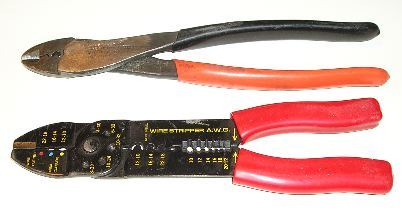
One of the most important requirements for secure terminations, is using the right crimping tool. Forget about using those cheap, all-in-one, stamped-metal ones often given away with terminal assortments. For small connections (#18 to #10), the Thomas & Betts hand tool is one of the best. Both types are shown at right.
Trying to use #12 terminals for #18 wire is another common faux pas. It pays to have a wide assortment of terminals, and lugs on hand.
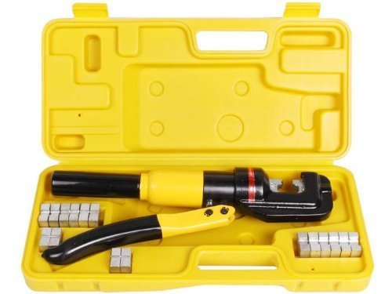
For larger sizes (#4 to 4/0), a hydraulic crimping tool is a necessity. TMS makes several different inexpensive ones, and all are available through Amazon. About the only difference are the variety of crimp dies they come with. Both hand-held and vice-held models are available. They average about $50 delivered, and are well-worth the expense.
Some of the best terminal devices are based around the Anderson PowerPole® connectors. West Mountain Radio, MFJ Enterprises and PowerWerx market these devices (as shown below), but a caveat or two are in order. First, some types are not completely sealed, so they need to be placed in such a manner to prevent any object from dropping on their partially exposed connections (water, dirt, keys, etc.), however unlikely.
Secondly, some of the various models marketed use preinstalled cables which are usually too short (and too small of a gauge), and require butt splices to attach them to the power source. Extending the cable's length also increases the I2R losses, so proper sizing is important. If possible, choose one without a built in primary cable, and add your own in the exact length, and size required.
 Their best attribute is the ease of connection and disconnection. The unit in the left photo is a RigRunner® model 4005 from West Mountain Radio. They carry many different models in a variety of configurations to suit almost any mobile or base requirement. If you're interested to learn more, there is a good article about Anderson Powerpole devices in the March 2006 issue of QST starting on page 31. Incidentally, some models of the RigRunner® have LED indicators that light when a fuse blows, and a few have USB power connections as well.
Their best attribute is the ease of connection and disconnection. The unit in the left photo is a RigRunner® model 4005 from West Mountain Radio. They carry many different models in a variety of configurations to suit almost any mobile or base requirement. If you're interested to learn more, there is a good article about Anderson Powerpole devices in the March 2006 issue of QST starting on page 31. Incidentally, some models of the RigRunner® have LED indicators that light when a fuse blows, and a few have USB power connections as well.
Both West Mountain Radio and PowerWerx carry just about any kind of terminal, fuse block, and wire you could think of. Although the biggest wire size they carry is #6 AWG, it has a high strand count which makes it very flexible, and therefore easy to install.
The 4005 pictured above comes with a 6 foot, 10 AWG primary power cord with 45 amp connectors already installed on one end, and 1/4 ring connectors on the other end. If you need a longer (and larger) cable, go to West Mountain Radio's, web site for more information. While you're there, look over the other amateur related devices, especially their wire crimper! Use a cheap crimp tool, and you won't be able to marry the housing with the respective terminal! By the way, take time to read the instructions which come with the tool. If you don't, you'll invariably end up twisting one or both wires so the terminals will seat properly in the nested housings.
Incidentally, when using a 4005 or similar distribution block, in a vehicle, no matter where the negative lead is attached (battery or chassis), both it and the positive lead need to be fused. This prevents a small ground loop from occurring between the leads, and prevents damage to the block and/or attached devices, should the negative lead connection fail.
As with any wiring, it should be protected from shorts, abrasion and other maladies. Therefore, any excess should be cut off, not bundled up with a cable tie—think voltage drop!
 Power Pole connectors come is a variety of colors, and most match the color of the various fuse amperages used in the aforementioned distribution terminals. Thus, if you select a connector with the same color as the ATC fuse, you're less likely to plug a cable into the wrong amperage fuse slot.
Power Pole connectors come is a variety of colors, and most match the color of the various fuse amperages used in the aforementioned distribution terminals. Thus, if you select a connector with the same color as the ATC fuse, you're less likely to plug a cable into the wrong amperage fuse slot.
If you run an amplifier and/or second battery, the PP120, and PP180 are good choices for a quick disconnect for wire sizes up to 2/0. The only drawback is the requisite crimper, which sells for about $300 with dies. By the way, it isn't advisable to solder these large connections.
Finding connectors for wire sizes over #8 can be a problem. Here are a few places you might not have thought of. Fastenal has stores all over the United States, and they do mail order as well. They also carry fuses and fuse holders. Newark.com carries larger sized connectors than Mouser or DigiKey, but the latter ones will special order.
On a local basis, welding supply shops, electric motor rewinding shops, OTR truck parts houses, and oil field suppliers often carry heavy duty connectors. Most hardware stores, Lowes Home Improvement Centers, and Home Depot stores are a waste of time for anything larger than size 10 AWG. When buying connectors, buy the best quality you can, as scrimping on connectors is a prescription for a failure!
Wherever possible, I suggest using ring connectors, rather than spade type connectors because the stay put even if the connection loosens. All connectors should be both crimped and soldered to insure strength and low resistive connections. It is also a good idea to use star washers under the lugs to assure a tight connection. And avoid butt connectors.
Rigorous inspection of wiring and fuse holders should be carried out at least once a year. This may require removing and reinserting fuses in their holders. This is especially important when using tubular fuses, housed in spring-loaded, in-line holders. The inspection should also include looking for discolored parts which might indicate a loose connection or overload condition (pyrolysis).
As mentioned above, excess cabling should be shortened as required. Unfortunately, some amateurs just can't bring themselves to cut up a $12 factory power cable. The typical response is, "...what if I have to lengthen it when I change vehicles"? Here's the answer; use Power Pole connectors to make your splices. If you need to extend the cable later, take that cutoff piece (you did save it because you're a typical amateur, right?), apply Power Pole connectors to it, and you're back to a full-length cable. What could be easier?
☜Return☜
Terminating Blocks
It is often necessary to use terminating blocks, but there are a few caveats. Inadvertent contact with the terminals should be avoided for obvious reasons. This means they need to be well placed in more ways than one! Insulated terminal covers are often available, and should be used whenever possible.
Speaking of insulation, don't use electrical tape to protect the terminals! If you must cover them, use Rescue Tape, which leaves no residue, and is noncorrosive.
One good source for terminating blocks is Advance MCS Electronics. One of there kits comes complete with positive and negative blocks, and an assortment of lugs. They sell through Amazon. Blue Sea also makes terminating blocks. They're available through West Marine, and other marine retailers.
☜Return☜
All About Fuses
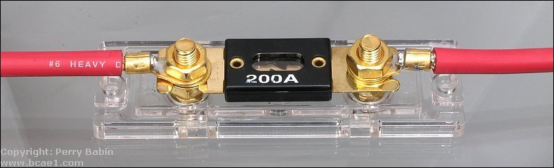
The definition of a fuse is relatively simple. It is a short piece of enclosed wire, which melts when subjected to too high of a current. When it does, the circuit opens. However, if you've chosen the incorrect size for your application, it may not open. Or, it may open after a very long delay. In any case, you want the fuse to do its job, well before your wiring becomes its own fuse! A good example of incorrect fusing is illustrated in the right photo. The wire size is #6 with a current-carrying capability of ≈100 amps, and the fuse is 200 amps!
Fuses are there to protect the cabling (wiring), not the transceiver! For example, the Icom IC-7000 has a 5 amp (system) fuse mounted inside the radio, and 30 amp fuses in the cabling (both plus and minus leads). If you short out a supply connection (pin 3 of the tuner port), a circuit board trace and/or switching transistor will fail long before the 5 amp fuse opens. The 30 amp fuses will never open in this particular case. It can be argued that the power cable fuses do protect the radio if something fails catastrophically, a final perhaps, but chances are some other component in the circuitry will be damaged beyond repair before the power cable fuse(s) opens, and here is why.
All fuses exhibit a time delay between any given ampere overload, and when the fuse opens. This delay (hysteresis) is called Ampere Squared Seconds, and is expressed as I2T. For example, a nominal 20 amp fuse will handle a 30 amp load for about 90 seconds. It will hold a 100 amp load for about 1 second. Just after the fuse element melts, there is a brief short period of time when an arc occurs, after which the fuse opens the circuit completely.
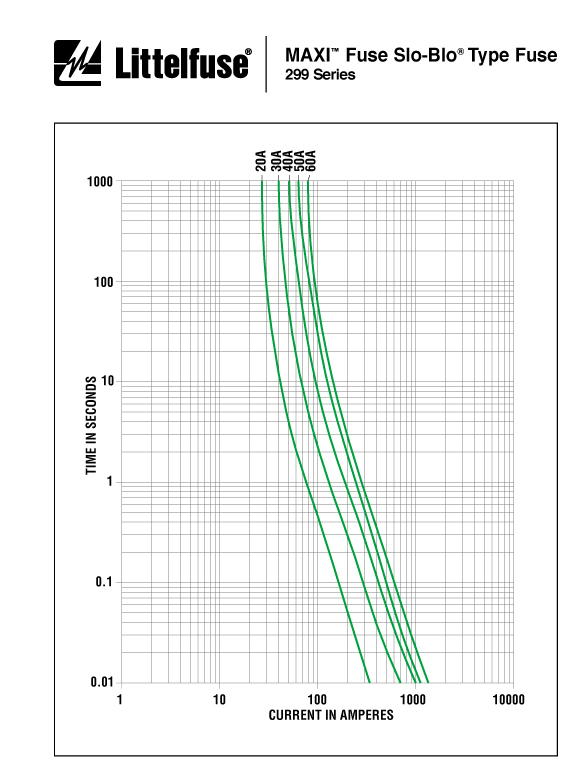
The chart at left (click to enlarge) covers Littelfuse's 299 series fuses (shown below in colors which match their ratings), more commonly called Maxi fuses. They're popular in amateur mobile installations as they are a modern replacement for the older cylindrical style 5ag fuses. They're also available with LED failure indicators.
Note that a 30 amp Maxi fuse will take about 3 seconds to open when subjected to a 100 amp load! The same fuse will carry 40 amps for about 8 minutes! As the static temperature goes up, the vertical scale compresses slightly, and in very cold temperatures settings it elongates slightly. So, I2T is the time lag between applying an overload, and the fuse opening to protect the wire. In the mean time, the wire being protected is getting rather warm. If it gets too warm, hot really, it could cause a fire (pyrolysis). For a better understanding, let's look at some specific cases.
 Most amateur transceivers' DC power cords are built using 10 AWG, or an equivalent (i.e.: Metric 6). Further, most are about 3 meters long (≈10 feet), and most are fused with 30 amp fuses. If you subject them to 22 amps of current (nominal input for key down full power), they'll exhibit a .62 volt drop (including the drop caused by the internal resistance of the fuses, and their holders). This means the power cable will be dissipating about 11 watts.
Most amateur transceivers' DC power cords are built using 10 AWG, or an equivalent (i.e.: Metric 6). Further, most are about 3 meters long (≈10 feet), and most are fused with 30 amp fuses. If you subject them to 22 amps of current (nominal input for key down full power), they'll exhibit a .62 volt drop (including the drop caused by the internal resistance of the fuses, and their holders). This means the power cable will be dissipating about 11 watts.
If we subject the cable to a load of 100 amps (not a dead short) where the fuse would nominally require 3 seconds to open, our voltage drop is 2 volts, and our wire has to sustain 200 watts of dissipation for 3 full seconds! Now you know one of the reasons why it is so important to choose the correct wire size. To reiterate, the wire must be capable of handling the nominal ICAS load with a minimal amount of voltage drop (.5 volts or less), and yet be capable of handling an impressive overload, albeit briefly.
 One often asked question: If the radio draws just 20 amps peak, why not use a 20 amp fuse instead? That is a difficult question to answer, due to the varying ambient temperature these fuses are subjected to. This said, if the power cable is extended (incorrectly) with the same sizes wire (≈10 AWG), the stock fuses should be replaced with 20 amps ones.
One often asked question: If the radio draws just 20 amps peak, why not use a 20 amp fuse instead? That is a difficult question to answer, due to the varying ambient temperature these fuses are subjected to. This said, if the power cable is extended (incorrectly) with the same sizes wire (≈10 AWG), the stock fuses should be replaced with 20 amps ones.
Another often ask question: Is it safe to use a higher voltage fuse? The answer is maybe! For any given ampere rating, fuses designed for high voltage (nominal 250 volts maximum) service typically have lower resistance than those designed for low voltage (nominally 32 volts maximum). Thus, their low voltage I2T is elongated, which means they take longer to open under a given overload. While these facts alone don't preclude their use in low voltage applications, the bottom line is, you should select fuses specifically designed for the voltage range in use.
When you buy spare fuses for your transceiver, here is something to keep in mind. The blade fuses supplied with most mobile transceivers are ATC style, while most automotive fuses are ATO. While they look identical, the ATC fuse element is completely sealed in plastic, and the ATO is not. Since the power cable fuse holders are not waterproof, only an ATC fuse should be used. If an ATO is used, and water gets into the fuse, the element will corrode with predictable results.
Where the fuse was manufactured is important too. The left photo shows an ATO 35 amp, Chinese-made, fuse. It didn't do its job! In fact, it got hot enough to melt its fuse holder as well as itself. Worse, it still carries its rated current!
And lastly, some late-model (≈2018 and later) vehicles use J-Case fuses for high-amperage applications. Although fuse holders are readily available, they shouldn't be used in amateur applications, due to their extended I2T.
☜Return☜
Circuit Breakers
While reading the last section, if you were thinking out loud to yourself with this statement—I use circuit breakers, so I don't have this problem—you're kidding yourself! Fact is, circuit breakers exhibit a much longer I2T than any fuse except some specially designed slow-blow fuses. What's more, most circuit breakers will fail closed on dead shorts if the current exceeds 2,000 amps or so. A standard SLI (Starting, Lights, Ignition) car battery in good condition can easily supply 3,000 amps to a dead short, and an AGM as much as 4,000 amps! This includes so-called marine and aircraft circuit breakers, and any other device which uses movable contacts including relays!
If you use circuit breakers as switches, remember this: The main wiring protection device should be a properly-sized fuse!
☜Return☜
A Few Words On Relays
Using ignition-controlled relays to switch power off and on to amateur radio equipment is a common, but ill-advised, practice. Advocates believe that doing so will protect the equipment in question from starting motor transients. The truth is, a decent-quality SLI battery will have a capacitive equivalent of about 2,000,000 Farads! On average, their ESR (equivalent series resistance) is ≈3 milliohms (.003Ω), overruling that contention.
Another often-cited reason for using a relay is parasitic current draw—this is the current the transceiver draws when switched off. On average, it is about 20 uA (0.00002 amps). At a nominal battery resting voltage of 12.2 , the current draw amounts to less than .0003 watts! Just for the record, most vehicles have a parasitic draw averaging 20 mA (.02 amps), and a few four times this much!
 But, if you just gotta have remote relay control, Perfect Switch®is the answer (also see Power Protectors below). They employ FET technology, so there are no contacts which could fuse together in a dead-short scenario. Fact is, drawing current over their rating will cause them to disconnect, and require a reset. This is about as fail-safe as you can get. Proper fusing is still required, however
But, if you just gotta have remote relay control, Perfect Switch®is the answer (also see Power Protectors below). They employ FET technology, so there are no contacts which could fuse together in a dead-short scenario. Fact is, drawing current over their rating will cause them to disconnect, and require a reset. This is about as fail-safe as you can get. Proper fusing is still required, however
If you use a Perfect Switch® (or relay for that matter) to isolate a second battery, and that battery is discharged, turning on the Perfect Switch® or relay can cause a fault to be written to the engine CPU, thus illuminating the MIL (Maintenance Indication Light). This is especially troublesome scenario with vehicles equipped with battery monitoring systems.
☜Return☜
Fuse Holders
When using distribution devices like the aforementioned RigRunner®, there is a need to use a master fuses (positive and negative) mounted close to the battery. In-line fuse holders should be avoided for two reasons. First,  they require butt splices which are very hard to solder. Secondly, the supplied wire size is universally too small. You can use the PP15-45 connectors to hold an ATC fuse for loads up to 40 amps, and PP75 connectors will accommodate a Maxifuse up to 60 amps. The connectors are a lot cheaper than most decent fuse holders, but they have a drawback. Getting the fuse inserted properly can be difficult if you don't make sure the connectors are pushed all the way into their respective housings. For the smaller ATC fuses, standard 1/4 inch, female blade connectors work well too.
they require butt splices which are very hard to solder. Secondly, the supplied wire size is universally too small. You can use the PP15-45 connectors to hold an ATC fuse for loads up to 40 amps, and PP75 connectors will accommodate a Maxifuse up to 60 amps. The connectors are a lot cheaper than most decent fuse holders, but they have a drawback. Getting the fuse inserted properly can be difficult if you don't make sure the connectors are pushed all the way into their respective housings. For the smaller ATC fuses, standard 1/4 inch, female blade connectors work well too.
DigiKey, Fastenal, Mouser Electronics, Online Components, and PowerWerx all carry a wide variety of fuse holders. For high-amperage loads the choices are few, and those available for Maxi fuses have inadequate pigtails. The Littelfuse MAB1 holders are no longer manufactured limiting the choices even further. An alternative is the Bluesea Systems Maxi Fuse Block. They're sold by West Marine, and other full-line marine retailers. It will hold wire sizes up to #4 gauge wire which is adequate for most installations. However, the wire is clamped in using set screws, all but negating the use of high-strand wire, like welding cable, unless you use a crimped-on sleeve made for the purpose. Their protective cover is available in both red and black.
Most sound shops sell fuse holders designed for the older 5 ag fuses. There is nothing wrong with using them, but 5 ag fuses are getting hard to find especially in the larger amperage sizes (≥30 amps). The same goes for CBO and CNL styles (often called fork lift fuses), so their use should be questioned, unless you carry spares. You do carry spares don't you? And when you're buying automotive fuses, make sure they're ATC, not ATO! They look identical, but they're not!
Littelfuse does have a replacement for the old MAB1 fuse holders. It is their part number 279.6800.0001. Like Power Pole connectors pins, they're wire-size dependent, and neither Mouser or Digikey carry any of this specific product. Too bad really, as they are a well-designed alternative.
☜Return☜
Wiring Through the Firewall
With a few exceptions, the vehicle battery is located under the hood. It can be on the left or the right, and in some cases tucked away in front of the fender well or in the trunk area (ala Chrysler). Wherever it is located, the connections to it should be neat, clean, properly fused, and clear of obstructions. Split loom like that sold by Radio Shack and mobile sound shops should be used to cover the wiring. Routing the wire through the firewall must be neat, tidy, as direct as possible, and properly grommeted to avoid abrasion and the possibility of a short circuit.
Unfortunately, automotive manufacturers don't design their vehicles for inclusion of amateur radio. In some cases an extra hole is purposely left unused to facilitate the installation of after-market devices such as high-end sound systems. This is an exception, not a rule. Without this extra hole, most amateurs resort to using an existing wiring grommet—a potentially dangerous practice.
The existing holes allow all manner of control and electrical cables to safely enter the passenger compartment and keep engine fumes and water out. Size wise, most are barely adequate for their intended purposes and leave little margin for additional wires, especially those sized properly for an amateur transceiver. Further, probing these existing holes with an ice pick or screwdriver is a disaster in the making! The only real alternative is to drill your own hole. To some, this may seem as disastrous as drilling a hole in the top of the vehicle to mount an antenna. It isn't if you follow a few precautions. As previously stated, it requires forethought and patience, and the right tools.
Here are a few caveats.
Most modern vehicles have a fresh air inlet plenum just behind the hood. The plenum sometimes contains the windshield wiper assembly and perhaps a cabin air filter. For these reasons, the upper area of the firewall should be avoided. Further, most diesels and a lot of high-end vehicles have a second firewall designed to minimize engine noise intrusion into the passenger compartment. This second firewall should also be avoided.
Make sure you know exactly what is on the engine side of the firewall, before you choose a spot to drill. It is not uncommon for brake lines to be attached to the engine side of the firewall, directly below the brake pedal.
Choose a place that is outside any area where is might be stepped on or pinched. The closer to the left kick panel (on left drive vehicles) the better.
Forget about using a chassis punch, as they require clear access to both sides of the firewall.
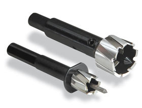
No doubt, the best tool to use is the Rotacut as shown at right. While they're expensive, they allow you to drill the exact-sized hole! A few big-box stores carry them, but for the most part you'll have to buy them on-line. They leave no sharp edges or flanges which need to be cleaned off. That fact alone, makes them worth the cost.
Once the hole is drilled, install a 3/4 inch ID grommet (you can buy these from any well-stocked hardware store). To make it easier to pull the wire, place a dab or two of Ideal© #77 wire lubricant on a rag and wipe down the outer surface of the cable. This stuff is slick (excuse the double entendré). In almost all cases, the amount of wire needed from the firewall out will be much less than that behind the fire wall. In other words, feed the wire from the passenger compartment to the requisite under hood fuse blocks first, and then to its final destination.
☜Return☜
Hiding the Wiring
Correctly installed wiring means it should be out of sight, protected from abrasion and sharp edges, and positioned in such a way to eliminate tripping hazards and interference from or to vehicle wiring and controls. This requires forethought and patience, and should never be done hurriedly. Running power cables hither and yon tied back by tyraps, twist ties, rubber bands, or duct tape are prescriptions for disaster.
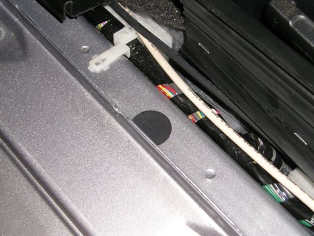
The left photo was taken just to the rear of the drivers side kick panel shows two #6 AWG THHN wire runs for the plus and minus feeds to the trunk. It is not evident in these photos, but the wiring trough is large enough to accommodate several more runs.
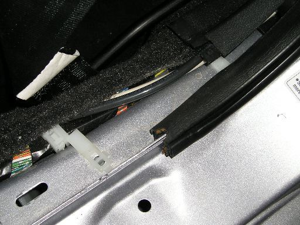
The second photo shows the cables where they enter the left rear seat trim panel on their way to the trunk. The runs are protected by a door sill cover assembly as well as the door sill trim panel. Most stereo shops run their wiring under the carpet which is a lot more work and not as safe.
Individual runs may be strapped together with commercial-grade tyraps if required. This should be done after the runs are installed. Do not use vinyl electrical tape to secure the cables as it will not stand up well in an automotive environment. Although the vinyl may not fail, the adhesive eventually becomes elastic which allows the tape to unwrap, and the adhesive sticks to everything but itself. The best alternative is good quality polyolefin heat-shrink tubing, but admittedly it can't be used everywhere. If you have to use tape, use Scotch #27 high-temperature glass tape. Be aware it is difficult to remove once it is subjected to heat. The best bet is to use butyl rubber shrink tape which doesn't use an adhesive backing. Dig deep as this stuff costs $9 a roll from DigiKey. You can use Rescue Tape as well, but remember, it cuts easily so avoid sharp edges.
Heat shrink tubing requires a heat gun. Besides the tubing, All Electronics, DigiKey, Harbor Freight, Fastenal, Online Components, and Mouser Electronics, all carry heat guns with prices varying between $40 and $250 depending on both quality, and duty cycle. Since we don't use one all day long, we don't need a high priced one, so here's a suggestion; Hobby Lobby sells (in store and on line) a heat embossing gun for ≈$25. It works perfectly as a light duty heat shrink gun, and its small size and light weight make it easy to use and store.
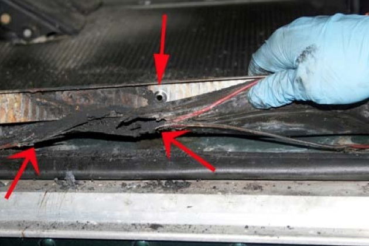
Neatness counts! Make all turns as gradual as you can, avoid sharp edges and pinch areas. Use split sheathing where the wires will be exposed, and at interference points which can not be avoided.
All wiring should be secured to prevent vibration damage to the insulation and/or connection points.
Don't get in a hurry! The phrase "throw the rig in the car and head for..." has no merit in amateur radio. The results are always equal to the effort put into the project. The aforementioned wiring job took several hours to complete.
Being careful counts too! The photo on the left, courtesy of Mike Higgins of K-Chem Labs, shows the end results of a vehicle electrical fire caused by careless wiring. In this case, a screw used to hold down the door sill trim plate was screwed through the wiring. The resulting fire destroyed the vehicle. This proves the need to know what is on the other side of any attachment screw, existing or not! Incidentally, Mike's site has some very interesting information of vehicle fires, and their causes, including this one. While not directly related to amateur radio, it reinforces the need to be take your time, and do your wiring with prudence.
☜Return☜
Under Chassis Wiring
More and more, amateurs are opting to run high power wiring under the chassis. If you do, you need to use extra care in protecting the wiring from road hazards, and weather issues. The wiring itself should be rated for wet locations, and should be covered with split loom material. Liberal use of all-weather tyraps is essential, and you almost can't use too many. Don't use run-of-the-mill tyraps! They just won't stand up to the environmental stresses involved. Fastenal is a good source for all-weather tyraps. If the package doesn't say uV protected, you can bet they're not the correct ones.
Thomas & Betts, the inventor of the Ty-Rap®, makes one type which has a thin metal strip embedded inside. They're available with and without screw eyes, and are very strong. If your application is demanding, these are the best money can buy. Check their web site for retailers.
When routing the wiring, you should stay clear of suspension members, exhaust systems, existing factory wiring, and fuel lines. On most vehicles, it is possible to follow the brake lines and utilize their hard points to secure the wiring. However you do it, frequent inspections is a prerequisite for safety.
If you live in the sticks, or drive on rock-covered roads, or you live in the upper U.S. with lots of ice, under chassis wiring should be a last resort, unless it is encased in metal conduit.
☜Return☜
Power Protectors
 West Mountain Radio manufactures two devices for those folks who power their radios directly from a nominal 12 volt supply; mobile in other words, especially stationary mobile.
West Mountain Radio manufactures two devices for those folks who power their radios directly from a nominal 12 volt supply; mobile in other words, especially stationary mobile.
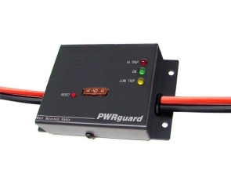
The PWRcheck® properly assesses, and monitors your backup battery load. It can handle up to a 40 amp load, and has 13 display modes including voltage, current, wattage, and amp-hours, replete with programmable alarms! And of course, it uses 15/45 Powerpole® connectors for both source and load. It has a back-lit LCD, stores up to 174,000 sample points for data logging (that's over 4 months worth), and includes PC software for real-time monitoring, data download, and charting. If you're into fixed, and/or portable operation, it is just the ticket!
The device shown at right is their PWRguard®. It contains a 40 amp, high-power FET switch (no relays here!) which control circuitry activates. If the input voltage drops below 11.5 VDC, or goes above 15 VDC, the PWRguard® shuts off the output power. Although aimed at the battery powered crowd, it does in fact have applications in the portable, and mobile market places.
Both devices are available from PowerWerx, and other fine amateur radio dealers.
☜Return☜
Home
 Twisting the positive and negative power leads together to enhance noise immunity and/or cure alternator whine and/or cure ignition RFI are popular myths. So popular in fact, that at least one automobile manufacturer mentions this myth in their two way radio installation guide! The truth is, power cables are not balanced in the same sense CAT5 cable is. Thus twisting the power lead wires has virtually no effect on noise immunity at common amateur frequencies.
Twisting the positive and negative power leads together to enhance noise immunity and/or cure alternator whine and/or cure ignition RFI are popular myths. So popular in fact, that at least one automobile manufacturer mentions this myth in their two way radio installation guide! The truth is, power cables are not balanced in the same sense CAT5 cable is. Thus twisting the power lead wires has virtually no effect on noise immunity at common amateur frequencies. 


{kind=link}
{kind=link}
{kind=link}
{kind=link}
{kind=link}
{kind=link}
{kind=link}
{kind=link}
{kind=link}
{kind=link}
{kind=link}